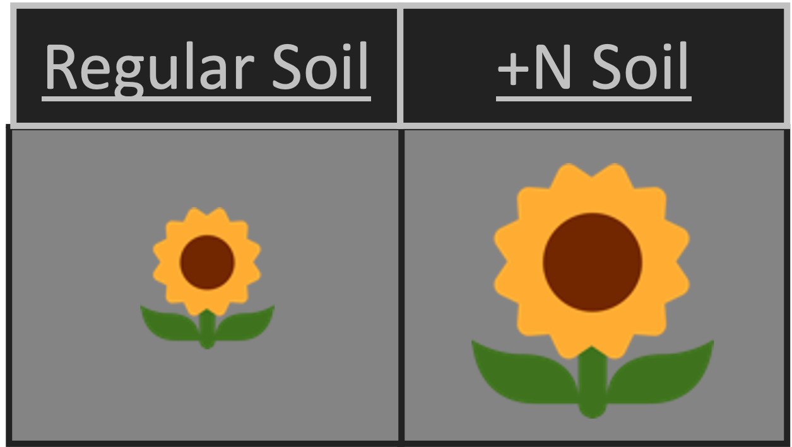
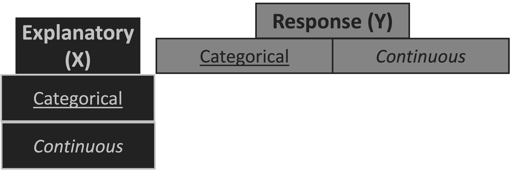
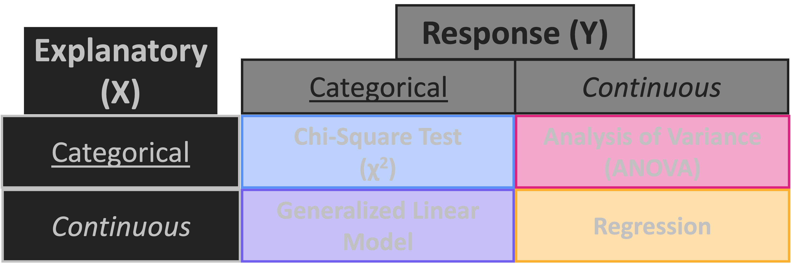
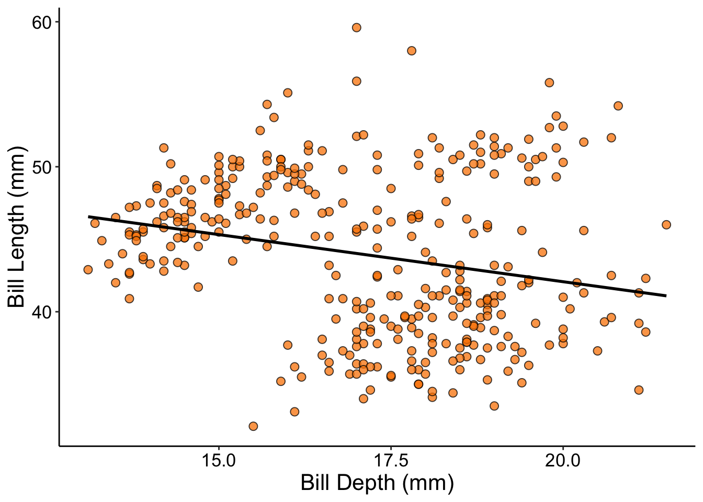
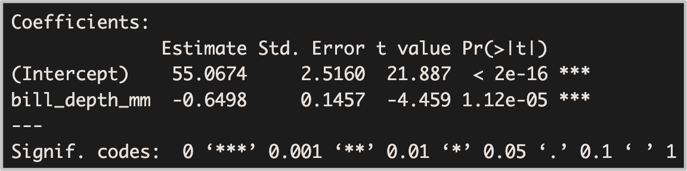
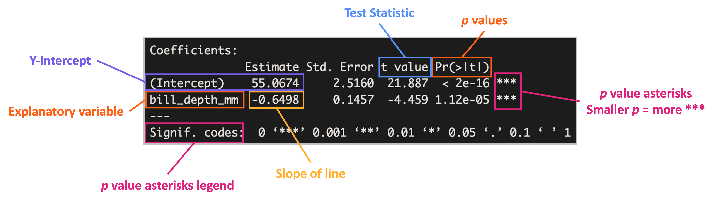
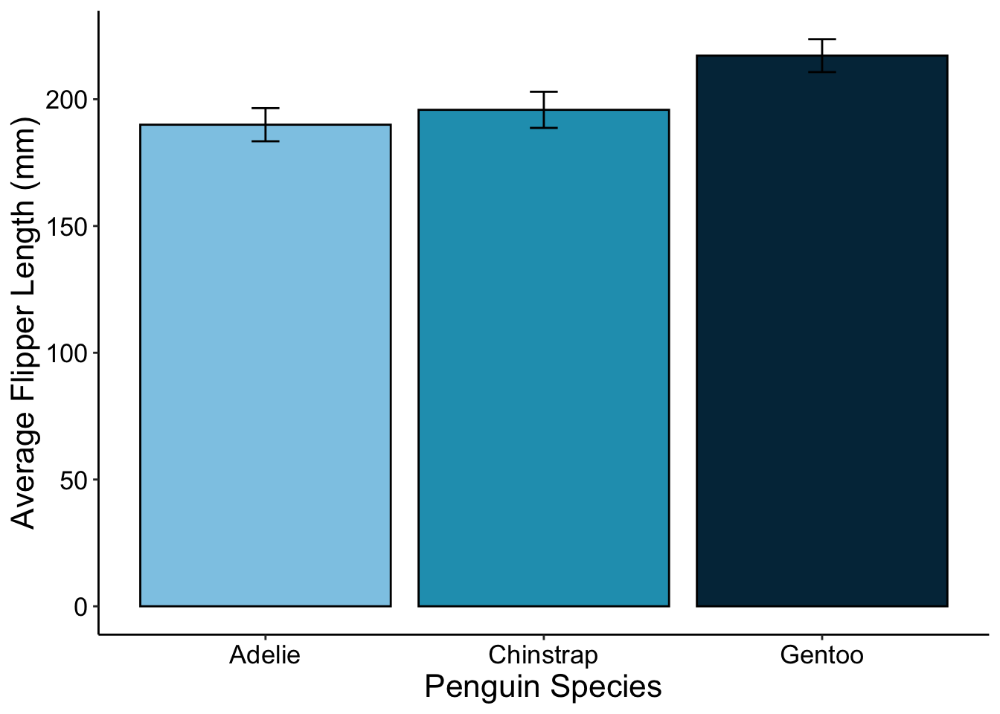
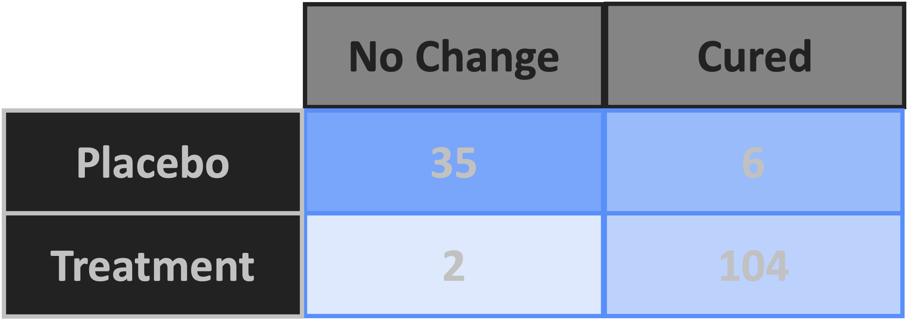

Intro to Data Science
Lab 4 – Statistics
A Guide to Your Process
Scheduling
Learning Objectives
Practice
Supporting Information
Class Discussion
Today’s Plan
- Muddiest Point Review
- Statistics Background
- Stats Roadmap
- Fundamental Statistical Tests
- Multiple X Variables
Today’s Learning Objectives
After today’s session you will be able to:
- Recognize continuous versus categorical variables
- Identify which statistical test is appropriate given X/Y variable types
- Perform analytical tests using R
Muddiest Point Review
- Recurring topics from most recent MPs:
- Function Tutorial Assignment Questions
- What other topic(s) would you like to review?
Statistics Chat
- What previous experience do you have with statistics?
- Do not worry if the answer is “none”!
- I just want to get a sense for where you’re at
- What terms come to mind when you think about stats?
- Have you heard of (or read about) any specific tests?
- If so, what were they?
Statistics & Scientific Method
- Scientific Method:
- Ask a question
- Make a hypothesis (educated guess for answer to question)
- Test hypothesis with experiment
- Analyze data to test hypothesis
- Report results
- “Statistics” is what we do with our data to test our hypotheses!
- I.e., whether we find support for our hypothesis or not
Statistics Justification Example
- Hypothesis: adding Nitrogen (N) to soil will make sunflowers grow taller
- Test: Grow many sunflowers either with or without adding a set amount of N to the soil
- Data: After set number of days, measure height of all sunflowers

Stats Example Continued
- How do we decide whether adding N to the soil resulted in taller sunflowers?
- What difference in height would be “enough” to say whether we were right?
- What if some of the +N sunflowers are shorter than some of the regular sunflowers?
- Does this mean our hypothesis isn’t supported?
- We need to use a statistical test to evaluate our hypothesis!
Statistics’ Role in Science
- Statistical tests let us know whether or not our hypothesis is supported
- These tests include some assumptions but they are well-documented
- Scientists assess the appropriateness of the statistics in the same way they do for experimental design
- A perfect experiment with inappropriate statistics is not good science
Data Science & Statistics
- Today is not a deep dive into the math behind statistics!
- There are whole classes devoted to that
- Professional data scientists have to look at data and pick an appropriate test
- In this class we’ll:
- Look at some typical test types
- Cover what data types are the best fit for each test
Data Science & Statistics Analogy
- Statisticians are like artists
- Data scientists are like art historians
- Data scientists recognize art and can talk about it but we may or may not be artists ourselves!
Temperature Check
How are you Feeling?

Hypothesis Testing Philosophies
Null Hypothesis Testing
Multi-Model Inference
Hypothesis Testing Philosophies
Null Hypothesis Testing
- Make hypothesis & “null hypothesis”
- HA: Something is happening
- H0: Nothing is happening
- Assess odds of obtaining results as extreme as observations assuming H0 is correct
- Measured by P value
- Ranges from 0 (0%) to 1 (100%)
Multi-Model Inference
Hypothesis Testing Philosophies
Null Hypothesis Testing
- Make hypothesis & “null hypothesis”
- HA: Something is happening
- H0: Nothing is happening
- Assess odds of obtaining results as extreme as observations assuming H0 is correct
- Measured by P value
- Ranges from 0 (0%) to 1 (100%)
Multi-Model Inference
- Define many possible explanations for observation
- I.e., many competing hypotheses
- Compare model strength
- Stronger models are better fit for the data and thus are more likely to be true
- More on this in Lecture #5!
Philosophies Continued
- Null hypothesis testing & multi-model inference are both good science!
- Just different framings of a hypothesis
- Does temperature have more of an effect than rainfall on newt growth?
- Higher temperatures and more rainfall affect newt growth
Philosophies Continued
- Null hypothesis testing & multi-model inference are both good science!
- Just different framings of a hypothesis
- Does temperature have more of an effect than rainfall on newt growth?
- Multi-model inference
- Want to know which variable explains the data better
- Higher temperatures and more rainfall affect newt growth
Philosophies Continued
- Null hypothesis testing & multi-model inference are both good science!
- Just different framings of a hypothesis
- Does temperature have more of an effect than rainfall on newt growth?
- Multi-model inference
- Want to know which variable explains the data better
- Higher temperatures and more rainfall affect newt growth
- Null hypothesis testing
- Want to know whether higher values result in effect on newts relative to lower values
Null Hypothesis: P Values
- P values < 0.05 are called significant
- Significant P values mean you ‘reject the null hypothesis’
- I.e., you find support for your hypothesis!
- 0.05 < p < 0.1 is ‘marginally significant’
- A.k.a. weak evidence of support for hypothesis
- In science writing, “significant” always means P < 0.05
- Use synonyms for non-P value contexts
- E.g., dramatic, substantial, important, etc.
Hypothesis Testing Chat
- What questions do you have about this?
- Ready to continue?
- I promise that is the end of the “stats theory” portion!
Temperature Check
How are you Feeling?
Variable Types
Continuous
Categorical
Variable Types
Continuous
- Must be a number!
- Okay if coercible to number
- I.e., months can become 1-12
- Examples
- Sunflower height
- Flower nectar concentration
- Feather density
Categorical
Variable Types
Continuous
- Must be a number!
- Okay if coercible to number
- I.e., months can become 1-12
- Examples
- Sunflower height
- Flower nectar concentration
- Feather density
Categorical
- Does not need to be a number
- Can be letters or numbers
- Examples
- Rainfall of 0 mm, 10 mm, or 20 mm
- “Site A”, “Site B”, etc.
Variable Types Visual

Variables & Hypothesis Testing
Response Variables
Explanatory Variables
Variables & Hypothesis Testing
Response Variables
- Data collected to test hypothesis
- Variable responding to treatment/outside force
- Can be categorical or continuous
- Also known as:
- Y variables
- Dependent variables (depend on explanatory variable)
Explanatory Variables
Variables & Hypothesis Testing
Response Variables
- Data collected to test hypothesis
- Variable responding to treatment/outside force
- Can be categorical or continuous
- Also known as:
- Y variables
- Dependent variables (depend on explanatory variable)
Explanatory Variables
- Treatment and/or measurement of world
- Variable explaining response
- Also can be categorical or continuous
- Also known as:
- X variables
- Independent variables
Statistics Roadmap


Regression
- X & Y are both continuous
- Hypothesis: The slope of the line between X & Y is not flat
- H0: The slope of the line is flat
- Examples:
- Butterfly toxicity (Y) increases with time (X)
- Tree diameter (Y) increases with age (X)
Regression Visual

R Stats Syntax
- All R statistical test functions use the same syntax
- Thankfully!
- Syntax is as follows:
- Some tests require other arguments
- But the above example is a template of the fundamental bits
Regression Syntax
- The function for regressions is
lm- Short for “linear model”
Practice: Regression

- You are studying penguins and want to test the following hypotheses:
- HA: As penguin bill length increases, bill depth decreases
- H0: Bill length and bill depth have no relationship
- Use a regression to test the hypothesis and assign it to an object
- What is the class of that object? What is its structure?
- Run the
summaryfunction on that object to get a human readable summary table
Interpreting Summary Tables
- You (maybe): “Okay, cute summary table but is our hypothesis supported or not?”

Interpreting Summary Tables
- You (maybe): “Okay, cute summary table but is our hypothesis supported or not?”

Analysis of Variance (ANOVA)
- X is categorical but Y is continuous
- Hypothesis: Groups of X have different average Y values
- H0: All groups of X have the same average Y values
- ANOVA function is
aov
- Examples:
- Different countries (X) have different numbers of rabbits (Y)
- Grazing on pastures (X) reduces plant height (Y)
ANOVA Visual

Practice: ANOVA
- You are still studying penguins but have new hypotheses:
- HA: Penguin species have different flipper lengths
- H0: Penguin species do not have different flipper lengths
- Use an ANOVA to test the hypothesis and assign it to an object
- What is the class of that object? What is its structure?
- Use the
summaryfunction to see if your hypothesis was supported- What difference(s) do you see between this and the regression summary table?
Chi Squared Test
- X & Y both categorical
- Hypothesis: Categories of X affect categories of Y
- H0: Categories of X are not related to categories of Y
- Used in medical contexts and Hardy Weinberg Equillibrium
- You may have encountered this in BIO 102

Temperature Check
How are you Feeling?
Roadmap Reminder
Roadmap Extension: Multiple Xs

R Syntax for Multiple Xs
- Special syntax to indicate multiple explanatory variables
- Separate each explanatory variable with a plus sign
n-way ANOVA
- Multiple X variables and Y must be continuous
- X variables may be either categorical or continuous
- “n” = number of X variables
- E.g., 2-way ANOVA has 2 X variables
- Hypothesis: Each X variable (separately) affects Y values
- H0: Each X does not affect Y
n-way ANOVA Continued
- Returns a P value for each X variable
- Examples:
- Temperature (X) and bird presence (X) both affect worm length (Y)
- Fire (X) and grazing (X) both affect butterfly lifespan (Y)
- n-way ANOVA function is the same as the regular ANOVA –
aov- “Regular ANOVA” == 1-way ANOVA
Practice: 2-way ANOVA
- New funding source and new hypothesis for your penguin research:
- HA: Penguin body mass differs among species and among islands
- H0: Penguin body mass does not differ with penguin species or island
- Test HA with a 2-way ANOVA
- Was your hypothesis supported?
- What difference(s) do you see between this and a 1-way ANOVA summary table?
Upcoming Due Dates
Due before lab
(By midnight)
- Muddiest Point #5
- Draft 1 of Function Tutorials
- Double check rubric to see that you’re not leaving any points on the table!